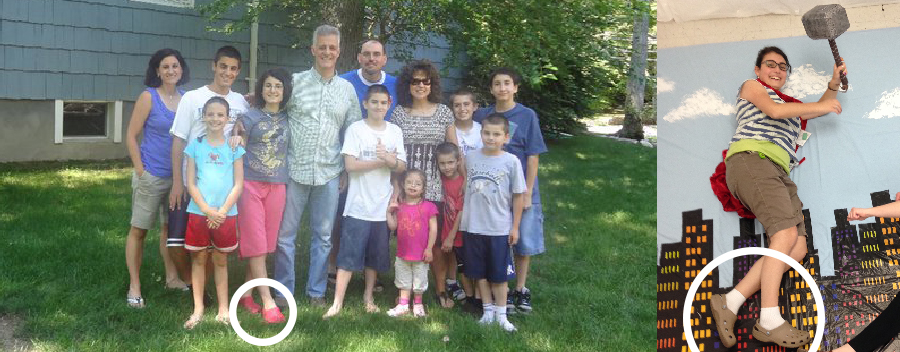
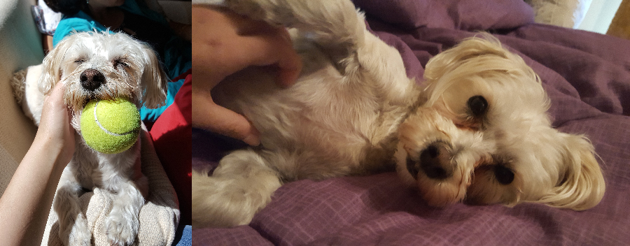
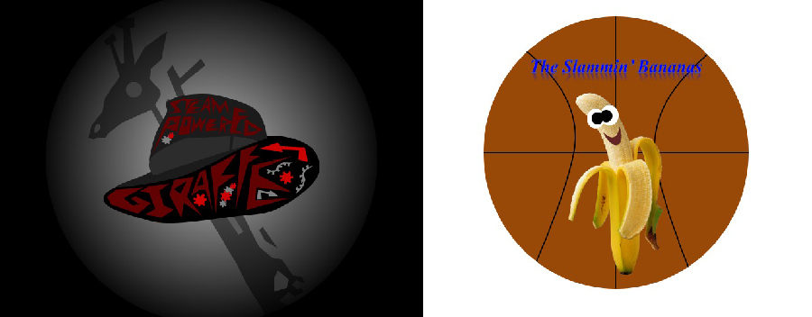
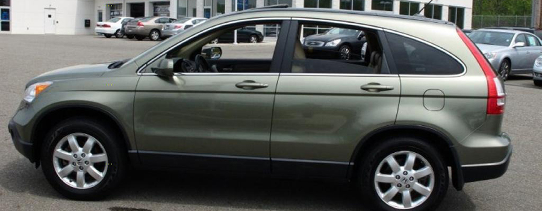

When I was really little, I would frequently
choke on salad at dinner time, to the point where my dad would have
to pull it out of my throat. I would literally dread eating salad
because I knew I would choke. The same also frequently happened
with pasta!

I got crocs during middle school and never
stopped wearing them. I despise flip flops and hate sandals so
really crocs are the only logical choice for summer footwear for
me. I also own a pair of dress shoe crocs because they were the
only dress shoes I would let my mom buy for me (I also hate dress
shoes)! Crocs are by far the superior shoe brand to all
others.
I wore a tacky multi-colored scarf every day and
every season when I was in the sixth grade. I don’t have a good
explanation for why I did this, because really it was a terrible
decision and I got really hot when I wore it during the late summer
and springtime at school. People would recognize me in later years
because they knew me as that girl who wore a scarf every day of the
sixth grade.

I don’t live with my dog anymore so I take
excessive amounts of pictures of him when I’m on break to
hopelessly try to fill the void. It doesn’t really work.

Way before I knew I wanted to be a graphic
designer, I got really into PowerPoint because I learned how to use
it from learning it in school. I made a lot of posters for fun and
they were all pretty ugly because… I mean I was using PowerPoint.
My senior year of high school, after actually becoming interested
in graphic design, I realized that my making silly PowerPoints was
just the very beginning of my path to being a graphic designer.
Anyways, I’m very good at PowerPoint now.
One time I was at the supermarket and I saw a
spider on my cart halfway through my shopping trip. I started
panicking in the middle of the store and ended up picking up my
abundance of groceries in my arms and then ran away in tears.
Enough said.
Kinky Boots is about a drag queen and a shoe
maker who team up to start a business together. While I’ve seen
every show listed, this was the first one that I saw on Broadway,
and still one of the best musicals I’ve ever seen.
When making my DnD character, I purposely chose
the what I thought to be the most basic race and class because
everyone else was going all out with their stats and skills. I
wanted to be really different from the rest of the characters by
being the most normal one if that makes sense? It was kind of silly
logic now that I look back on it.

Percy Jackson is one of my favorite literary
characters of all time, so it makes complete sense that my car
would be named after him.